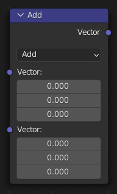
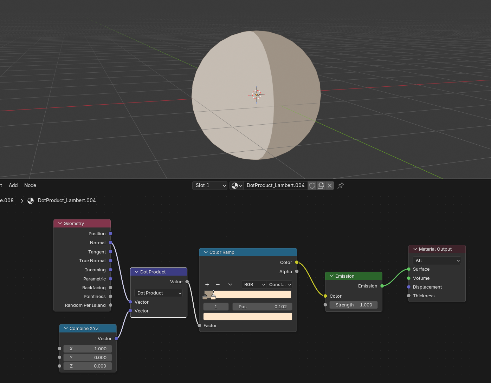
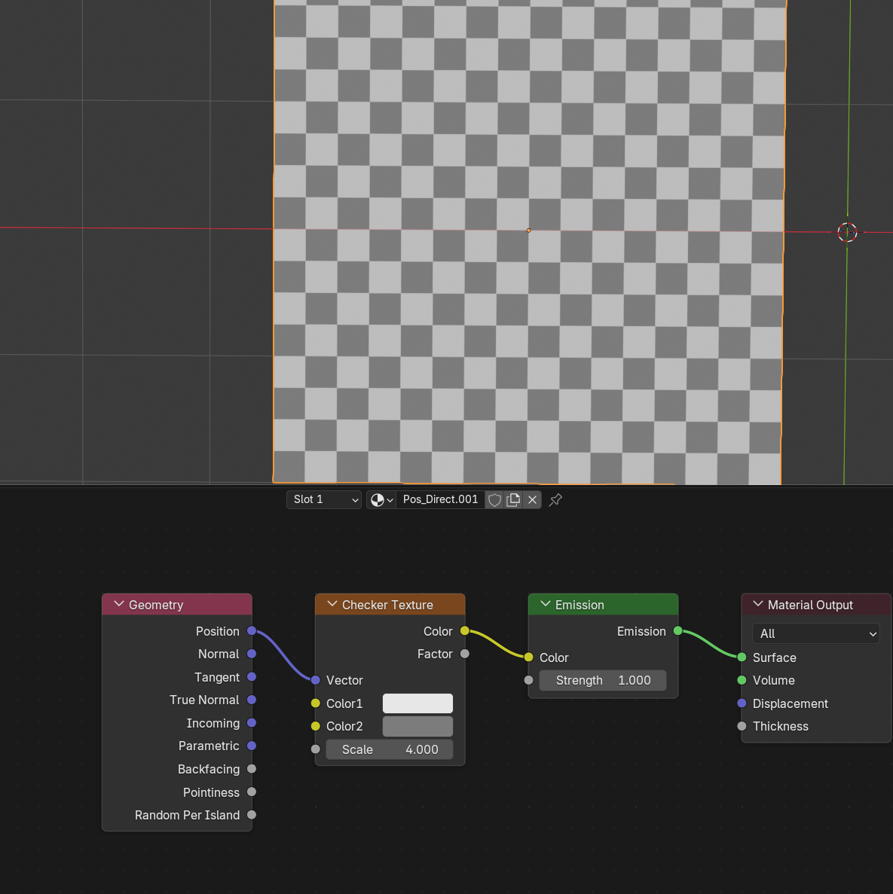
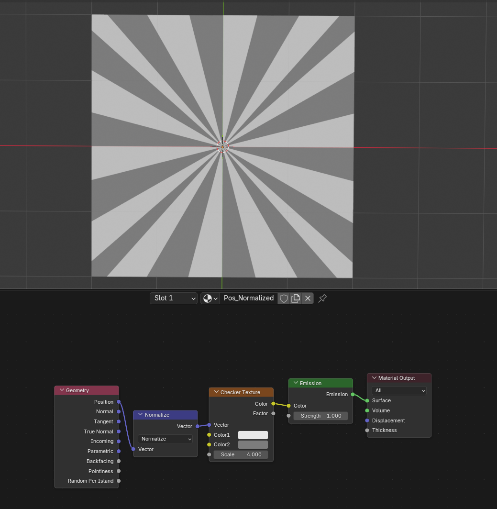
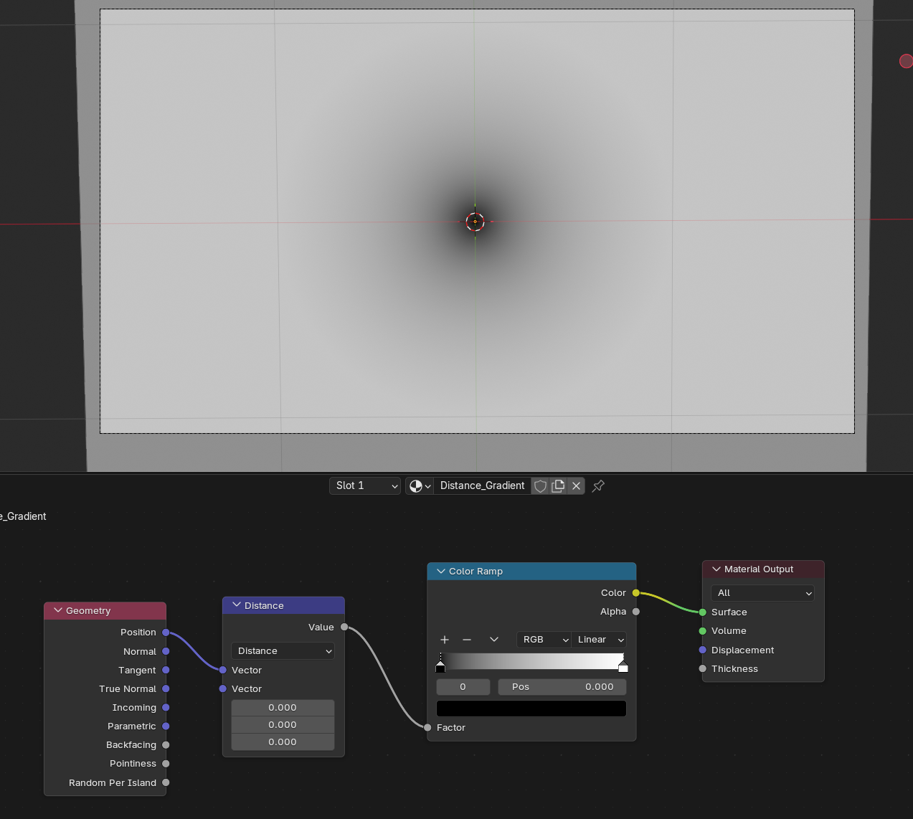
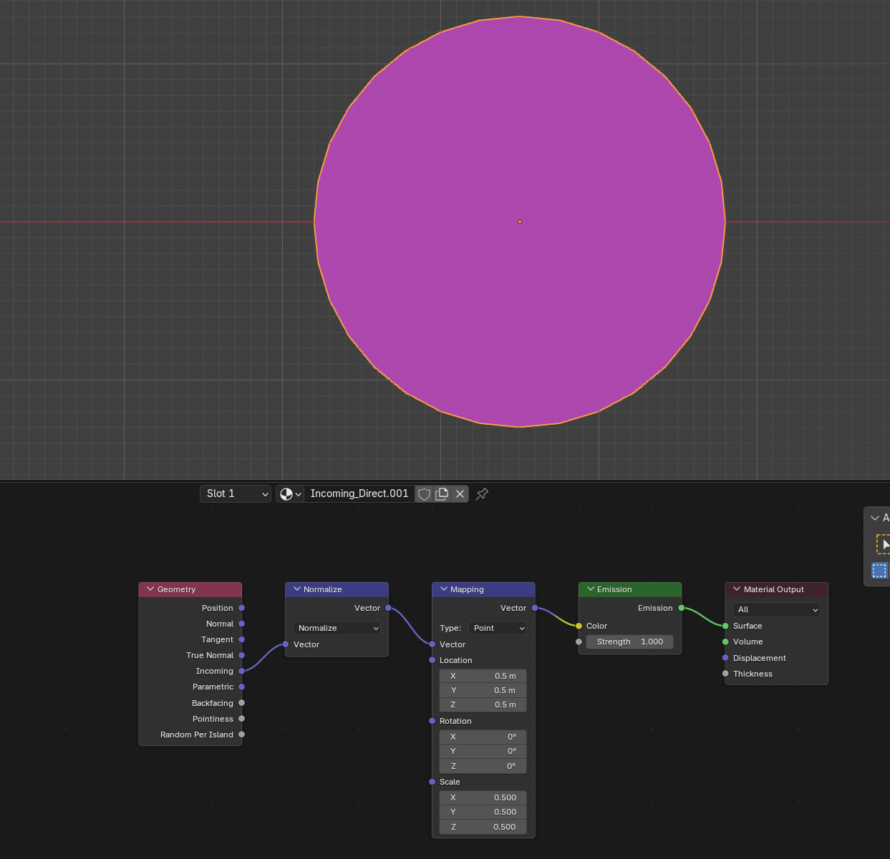
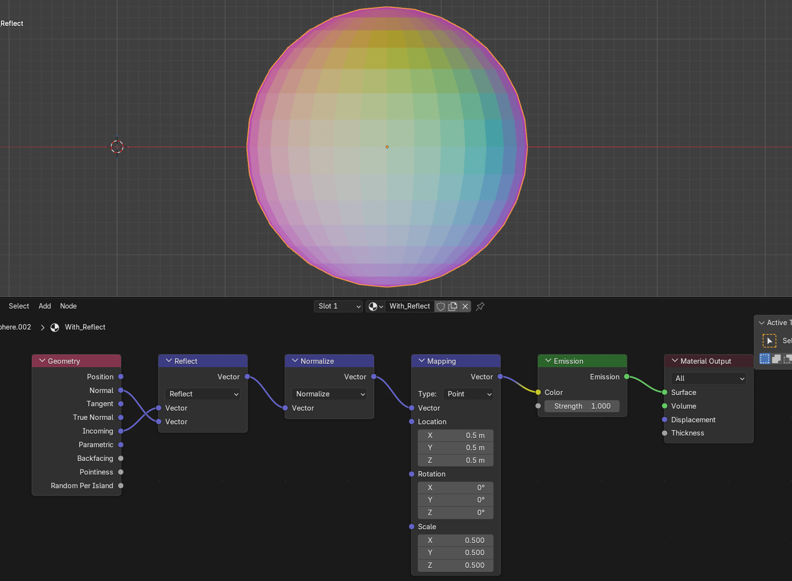

Node Vector Math¶

Node Vector Math thực hiện phép toán được chọn trên các vector. Node này được dùng rộng rãi để biến đổi normal, tính các quan hệ hướng, xử lý tọa độ texture và xây dựng hiệu ứng procedural trong các thiết lập shader node và geometry node.
Các đầu vào và đầu ra của node thay đổi động tùy theo phép toán được chọn. Một số phép toán xuất ra một giá trị float duy nhất (ví dụ Dot Product, Length), trong khi một số phép toán khác xuất ra vector (ví dụ Add, Cross Product).
Inputs¶
Các đầu vào là động: chúng chỉ xuất hiện khi phép toán được chọn yêu cầu. Nhãn của các socket đầu vào cũng thay đổi tùy theo phép toán.
- Vector
Đầu vào vector chính \(A = \begin{pmatrix} A_x \\ A_y \\ A_z \end{pmatrix}\). Khi Power được chọn, đầu vào này có nhãn Base.
- Vector
Đầu vào vector thứ cấp \(B = \begin{pmatrix} B_x \\ B_y \\ B_z \end{pmatrix}\).
Đầu vào này bị ẩn đối với các phép toán một toán hạng: Sine, Cosine, Tangent, Ceil, Floor, Length, Absolute, Fraction, Normalize, Sign, Round và Scale.
Nhãn thay đổi tùy theo phép toán:
Power → Exponent
Multiply Add → Multiplier
Faceforward → Incident
Wrap → Max
Snap → Increment
- Vector
Đầu vào vector bậc ba \(C = \begin{pmatrix} C_x \\ C_y \\ C_z \end{pmatrix}\).
Chỉ khả dụng cho Faceforward, Multiply Add và Wrap.
Nhãn thay đổi tùy theo phép toán:
Multiply Add → Addend
Faceforward → Reference
Wrap → Min
- Scale / IOR
Đầu vào vô hướng (scalar).
Chỉ khả dụng cho Scale (dưới dạng hệ số nhân) và Refract (dưới dạng tỷ lệ IOR).
Properties¶
- Operation
Phép toán vector sẽ được áp dụng lên các vector đầu vào.
Các Phép Toán Vector
Các phép tính số học cơ bản theo từng thành phần trên vector. Mỗi thành phần (X, Y, Z) được xử lý độc lập. Dùng để kết hợp, co giãn và dịch chuyển các giá trị vector như tọa độ texture hoặc normal.
- Add:
Tổng của A và B. \(\begin{pmatrix} A_x + B_x \\ A_y + B_y \\ A_z + B_z \end{pmatrix}\)
- Subtract:
Hiệu giữa A và B. \(\begin{pmatrix} A_x - B_x \\ A_y - B_y \\ A_z - B_z \end{pmatrix}\)
- Multiply:
Tích theo từng thành phần của A và B. \(\begin{pmatrix} A_x \cdot B_x \\ A_y \cdot B_y \\ A_z \cdot B_z \end{pmatrix}\)
- Divide:
Phép chia theo từng thành phần của A cho B. Chia cho số 0 cho kết quả 0. \(\begin{pmatrix} A_x / B_x \\ A_y / B_y \\ A_z / B_z \end{pmatrix}\)
- Multiply Add:
Kết hợp nhân và cộng theo từng thành phần: \(A × B + C\). Hữu ích để co giãn rồi dịch chuyển vector trong một node duy nhất.
- Scale:
Kết quả của việc nhân A với đầu vào vô hướng Scale. \(\begin{pmatrix} s \cdot A_x \\ s \cdot A_y \\ s \cdot A_z \end{pmatrix}\)
Tích Vector
Các phép toán tạo ra kết quả hình học có ý nghĩa từ hai vector. Đây là những phép toán thiết yếu cho ánh sáng, hướng và các tính toán 3D.
- Dot Product:
Tích vô hướng của A và B. Kết quả là một giá trị vô hướng duy nhất. \(A_x \cdot B_x + A_y \cdot B_y + A_z \cdot B_z\) Giá trị dương nghĩa là hai vector chỉ theo hướng tương tự nhau; âm nghĩa là ngược hướng; bằng 0 nghĩa là vuông góc. Thường được dùng cho ánh sáng (góc giữa normal bề mặt và hướng sáng) và để xác định một điểm nằm ở phía nào của một mặt phẳng.
- Cross Product:
Tích có hướng của A và B. Kết quả là một vector vuông góc với cả hai đầu vào. \(\begin{pmatrix} A_y \cdot B_z - A_z \cdot B_y \\ A_z \cdot B_x - A_x \cdot B_z \\ A_x \cdot B_y - A_y \cdot B_x \end{pmatrix}\) Dùng để tính normal bề mặt, các hướng vuông góc và các trục xoay.
Thao Tác Vector
Các phép toán biến đổi vector trong không gian — chuẩn hóa, căn chỉnh, phản chiếu và hiệu chỉnh hướng.
- Normalize:
Co giãn A để có độ dài bằng 1 nhưng vẫn giữ nguyên hướng của nó. Nếu A là (0, 0, 0) thì kết quả là (0, 0, 0).
- Absolute:
Giá trị tuyệt đối theo từng thành phần của A. Biến mỗi thành phần thành số dương. Hữu ích để tạo các hiệu ứng vector có dấu theo cả hai chiều.
- Project:
Phép chiếu của A lên B — tìm thành phần của A nằm theo hướng của B. Hãy hình dung nó như là "bao nhiêu phần của A chỉ theo hướng của B". Hữu ích để phân tách vector thành thành phần song song và vuông góc.
- Reflect:
Phản chiếu vector A quanh normal B, như thể nó bật lại khỏi một bề mặt. B không cần được chuẩn hóa. Thường dùng cho các hiệu ứng kiểu gương và tính hướng nhìn hoặc hướng sáng phản xạ.
- Refract:
Tính vector khúc xạ khi ánh sáng đi qua giữa hai môi trường. Nhận một vector tới A, normal bề mặt B và một tỷ lệ chiết suất (IOR) được cung cấp bởi đầu vào Scale. IOR ở đây là tỷ lệ giữa chiết suất của môi trường thứ nhất và môi trường thứ hai (ví dụ không khí tới nước = 1.0/1.33 ≈ 0.75).
- Faceforward:
Đảo vector A để nó chỉ về phía (thay vì ra xa) một bề mặt. Với một normal tham chiếu C, phép toán này đảm bảo A chỉ theo hướng tổng thể giống với C. Tính \((B \cdot C < 0) \;?\; A : -A\). Thường dùng để normal luôn hướng về camera, bất kể hướng của mặt sau.
Measurement
Các phép toán tạo ra phép đo vô hướng từ vector.
- Distance:
Khoảng cách giữa A và B. Xuất ra một giá trị vô hướng.
- Length:
Độ dài (độ lớn) của A. \(\sqrt{A_x^2 + A_y^2 + A_z^2}\)
Toán Theo Thành Phần
Các phép toán chuyển thể từ Math Node thông thường, hoạt động trên vector theo từng thành phần. Mỗi thành phần (X, Y, Z) được xử lý độc lập với cùng một phép toán.
- Power:
Lũy thừa theo từng thành phần, trong đó A là cơ số và B là số mũ (\(A^B\)).
- Sign:
Trích xuất dấu theo từng thành phần. Mỗi thành phần xuất ra 1.0, -1.0 hoặc 0.0.
- Minimum:
Giá trị nhỏ nhất theo từng thành phần của A và B.
- Maximum:
Giá trị lớn nhất theo từng thành phần của A và B.
- Round:
Làm tròn theo từng thành phần đến số nguyên gần nhất, với 0.5 được làm tròn lên.
- Floor:
Làm tròn xuống (floor) theo từng thành phần.
- Ceil:
Làm tròn lên (ceil) theo từng thành phần.
- Fraction:
Phần thập phân theo từng thành phần.
- Modulo:
Phép chia lấy dư (modulo) theo từng thành phần của A cho B.
- Wrap:
Phép bao (wrap) theo từng thành phần của A giữa giá trị nhỏ nhất (C) và lớn nhất (B). Tạo ra kiểu lặp răng cưa dọc theo mỗi trục.
- Snap:
Làm tròn xuống theo từng thành phần đến bội số gần nhất của B.
Lượng Giác
Các hàm lượng giác được áp dụng theo từng thành phần lên mỗi phần tử của vector đầu vào.
- Sine:
Sin theo từng thành phần của A.
- Cosine:
Cos theo từng thành phần của A.
- Tangent:
Tan theo từng thành phần của A.
Outputs¶
Đầu ra của node là động. Nó có thể là vector hoặc vô hướng tùy theo toán tử. Chẳng hạn, toán tử Length có đầu ra vô hướng trong khi toán tử Add có đầu ra vector.
- Vector
Vector đầu ra (khả dụng khi phép toán cho kết quả vector).
- Value
Giá trị đầu ra (khả dụng khi phép toán cho kết quả vô hướng, ví dụ Dot Product, Distance, Length).
Ví dụ¶
Ánh Sáng Lambertian với Dot Product¶

Ánh sáng Lambertian với Dot Product.¶
Dot Product tính cosin của góc giữa hai vector, nên đây là cách tiêu chuẩn để tính mức độ một bề mặt hướng về nguồn sáng:
Nối đầu ra Normal của node Geometry vào Vector A.
Nối một hướng sáng cố định vào Vector B.
Dùng Color Ramp để hiển thị dải cường độ, sau đó điều khiển một shader Emission.
Kết quả dao động từ 1 (bề mặt hướng thẳng vào nguồn sáng) đến -1 (bề mặt hướng ra xa nguồn sáng).
Chuẩn Hóa Vị Trí World¶
 Không dùng Normalize — Position được nối thẳng vào checker.¶ |
 Có dùng Normalize — Position được chuẩn hóa trước, tạo ra kiểu họa tiết tỏa tròn.¶ |
Normalize co giãn một vector về độ dài 1 nhưng vẫn giữ nguyên hướng. Khi áp dụng lên tọa độ Position trong world, nó chiếu mọi điểm lên một mặt cầu đơn vị tâm tại gốc tọa độ của world:
Đặt một mặt phẳng lưới và áp một texture checker.
Không dùng Normalize: nối Position của node Geometry thẳng vào checker — họa tiết tạo thành một lưới đều đặn trong không gian world.
Có dùng Normalize: đưa Position qua Normalize trước — họa tiết trở nên dày hơn gần tâm và bị kéo giãn về phía mép ngoài, như thể lưới đang được ánh xạ lên bề mặt một mặt cầu.
Dải Color Procedural với Distance¶

Dải color tỏa tròn procedural với Distance.¶
Distance tính khoảng cách Euclid giữa hai vector, cho ra một giá trị vô hướng:
Nối Geometry → Position vào Vector A. Đầu vào Vector thứ hai có thể để giá trị mặc định (0, 0, 0) để đo khoảng cách từ gốc tọa độ của world.
Đầu ra bằng 0 tại tâm và tăng dần ra phía ngoài.
Đưa kết quả vào Color Ramp → Emission để tạo một dải color tỏa tròn mượt mà.
Kỹ thuật này là nền tảng cho các đốm procedural, hiệu ứng vignette, hiệu ứng gần/khoảng cách và các trường khoảng cách có dấu (signed distance fields).
Phản Chiếu Hướng Nhìn¶
 Hướng tới được ánh xạ trực tiếp — màu gần như đồng nhất.¶ |
 Hướng phản xạ — các dải màu rực rỡ đến từ normal bề mặt.¶ |
Reflect tính hướng bật lại của một tia va vào bề mặt, dùng normal bề mặt làm trục gương. Sự tương phản giữa hướng tới và hướng phản xạ cho thấy cách hoạt động của Reflect:
Đặt hai UV Sphere cạnh nhau.
Trên sphere bên trái: nối Geometry → Incoming qua Normalize rồi ánh xạ lại thành màu RGB — hướng tới thay đổi mượt mà khắp bề mặt, tạo ra màu gần như đồng nhất.
Trên sphere bên phải: đưa Incoming qua Reflect (với Normal làm B) trước, sau đó chuẩn hóa và ánh xạ lại — hướng phản xạ thay đổi gắt gao hơn khắp bề mặt, tạo ra họa tiết đa dạng và nhiều màu.
Sphere bên trái thể hiện hướng nhìn không thay đổi; sphere bên phải thể hiện cách Reflect đổi hướng nó dựa trên normal bề mặt.